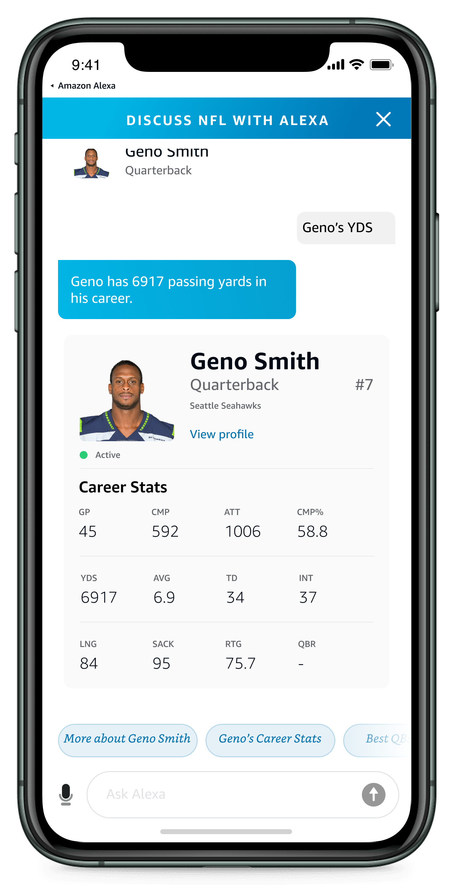
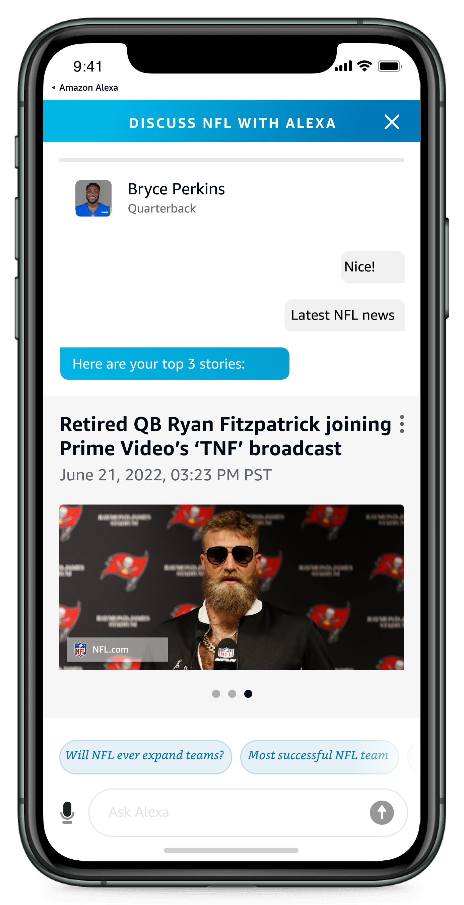

Features
Some of the features that the bot supported include:

Chat Responses
Multimodal responses embedded with images, video and links

Contextual Answers
General knowledge based contextual Q&A where Alexa infers from past conversations

Related News
Proactive engagement hooks such as related news articles to continue chats